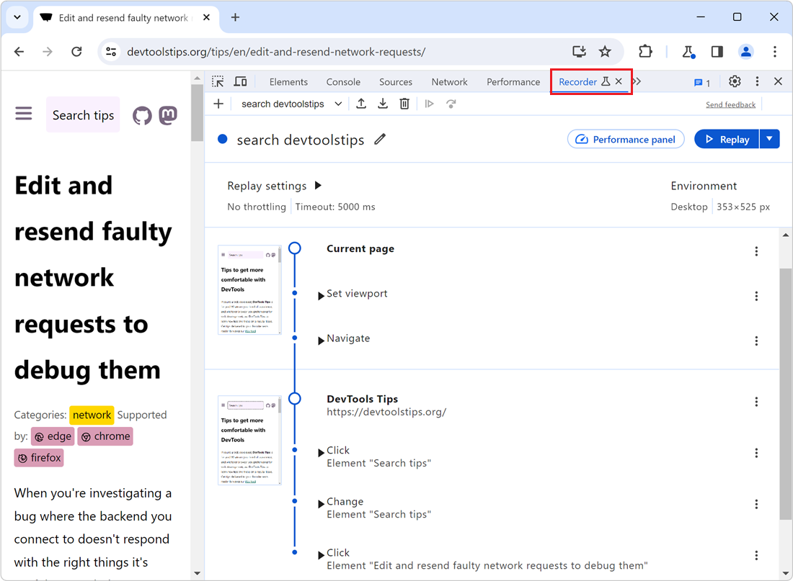

180 DevTools Tips
-
Emulate forced-color mode
 Operating systems offer an accessibility feature where the colors shown on the screen are converted to offer higher contrast. When you use this feature, it impacts all the content on the screen: your... Read more
Operating systems offer an accessibility feature where the colors shown on the screen are converted to offer higher contrast. When you use this feature, it impacts all the content on the screen: your... Read more -
Check if your site can be instantly reloaded from bfcache
 Most browsers are now able to instantly go back to previously visited pages without having to wait for them to load. This ability is powered by the back/forward cache (or bfcache). Firefox, Safari, an... Read more
Most browsers are now able to instantly go back to previously visited pages without having to wait for them to load. This ability is powered by the back/forward cache (or bfcache). Firefox, Safari, an... Read more -
Send feedback, ask for features and report bugs
 Browser vendors depend on your feedback to build the right tools for you. Without hearing from you all about what problems you have, or what features you lack, they can't take the right decisions abo... Read more
Browser vendors depend on your feedback to build the right tools for you. Without hearing from you all about what problems you have, or what features you lack, they can't take the right decisions abo... Read more -
Manipulate complex JSON files using DevTools
 I often work with large amount of data that I need to go through and gather interesting information from. Sometimes this data is in JSON format. When that's the case, I like using DevTools to turn it... Read more
I often work with large amount of data that I need to go through and gather interesting information from. Sometimes this data is in JSON format. When that's the case, I like using DevTools to turn it... Read more -
Detect low color contrast issues
 Low color vision is very common, and your choice of text and background colors can negatively impact people's experience of your website. What seems legible to you might not be for everyone. DevTools... Read more
Low color vision is very common, and your choice of text and background colors can negatively impact people's experience of your website. What seems legible to you might not be for everyone. DevTools... Read more -
Paste multiple CSS declarations at once
 You know how you can paste a CSS property name or value in the Styles (or Rules) panel? Well, you can actually paste several declarations at once too! For example, try copying the following entire CSS... Read more
You know how you can paste a CSS property name or value in the Styles (or Rules) panel? Well, you can actually paste several declarations at once too! For example, try copying the following entire CSS... Read more -
Detect the element with focus at any time
 If you want to know which element has the focus on the web page at any time, you can use a live expression in the Console tool. Open the Console. Click the Create live expression button (it looks lik... Read more
If you want to know which element has the focus on the web page at any time, you can use a live expression in the Console tool. Open the Console. Click the Create live expression button (it looks lik... Read more -
Use full browser window for device emulation
 Emulating different devices in the browser is incredibly useful. It gets tricky when you are on a device with limited resolution as the emulated device needs to be zoomed down to fit the screen as a l... Read more
Emulating different devices in the browser is incredibly useful. It gets tricky when you are on a device with limited resolution as the emulated device needs to be zoomed down to fit the screen as a l... Read more -
Record and replay user flows

Sometimes, you need to repeatedly test the same user scenario on a website. This can happen when working on a fix or a performance improvement. Testing the same user scenario over and over again requi... Read more
-
Remove or disable event listeners
 When you're trying to debug something and event listeners on the page keep interfering with what you're doing, it can be frustrating. Imagine a mousemove event listener that changes some of the inform... Read more
When you're trying to debug something and event listeners on the page keep interfering with what you're doing, it can be frustrating. Imagine a mousemove event listener that changes some of the inform... Read more -
Find HTML parsing errors
 DevTools is so full of features these days that we hardly ever use View-Source anymore. But it turns out that it has one trick up its sleeves that other tools don't, at least in Firefox and Polypane.... Read more
DevTools is so full of features these days that we hardly ever use View-Source anymore. But it turns out that it has one trick up its sleeves that other tools don't, at least in Firefox and Polypane.... Read more -
Select elements with pointer-events:none by holding Shift
 When selecting elements from the page they normally get highlighted on hover and selected on click. However certain elements can't be selected. Indeed, if an element does not react to pointer events b... Read more
When selecting elements from the page they normally get highlighted on hover and selected on click. However certain elements can't be selected. Indeed, if an element does not react to pointer events b... Read more -
Query object instances and holders from the console
 All browser DevTools have a few built-in functions in the console to do things like get the current element, or copy a string. But Safari exposes 2 nice built-in functions: queryInstances queryHolder... Read moreCategories: Supported by:
All browser DevTools have a few built-in functions in the console to do things like get the current element, or copy a string. But Safari exposes 2 nice built-in functions: queryInstances queryHolder... Read moreCategories: Supported by: -
Get detached DOM elements to investigate memory leaks
 Note: This Microsoft Edge-specific feature is being removed starting with Edge 133. The feature that it provides will continue to be available by using the Memory tool instead, and using the upcoming... Read moreCategories: Supported by:
Note: This Microsoft Edge-specific feature is being removed starting with Edge 133. The feature that it provides will continue to be available by using the Memory tool instead, and using the upcoming... Read moreCategories: Supported by: -
Write code on multiple lines in the Console
 If you're feeling adventurous and want to write longer pieces of code in the Console to execute more complex things, it can quickly become difficult. Thankfully, there are a few ways to make your life... Read more
If you're feeling adventurous and want to write longer pieces of code in the Console to execute more complex things, it can quickly become difficult. Thankfully, there are a few ways to make your life... Read more -
Download all images from the page
 If you want to download all of the images on a webpage in one go, you can use the following few lines of JavaScript code to do it: $$('img').forEach(async (img) => { try { const src = img.src;... Read more
If you want to download all of the images on a webpage in one go, you can use the following few lines of JavaScript code to do it: $$('img').forEach(async (img) => { try { const src = img.src;... Read more -
Edit and resend faulty network requests to debug them
 When you're investigating a bug where the backend you connect to doesn't respond with the right things it's useful to tweak the requests and try again quickly. You can do this by changing your fronten... Read more
When you're investigating a bug where the backend you connect to doesn't respond with the right things it's useful to tweak the requests and try again quickly. You can do this by changing your fronten... Read more -
Highlight the effect of individual CSS properties on hover
 How do certain CSS properties apply to the page isn't always an easy question to answer. While some properties might be considered simple, others have complex effects that depend on other factors. Pro... Read more
How do certain CSS properties apply to the page isn't always an easy question to answer. While some properties might be considered simple, others have complex effects that depend on other factors. Pro... Read more -
Visualize the effect of CSS transforms
 CSS transforms can sometimes be hard to wrap your head around, especially when chaining multiple transformations. Firefox helps with a cool visualization tool that allows you to see how and where the... Read moreCategories: Supported by:
CSS transforms can sometimes be hard to wrap your head around, especially when chaining multiple transformations. Firefox helps with a cool visualization tool that allows you to see how and where the... Read moreCategories: Supported by: -
Copy a CSS rule as CSS-in-JS format
 Do you use a CSS-in-JS framework? If so, you know how frustrating it can be to copy CSS from DevTools and paste it into your code. Indeed if the CSS you worked on in the Styles panel looks like this:... Read more
Do you use a CSS-in-JS framework? If so, you know how frustrating it can be to copy CSS from DevTools and paste it into your code. Indeed if the CSS you worked on in the Styles panel looks like this:... Read more -
Scroll an element into view
 If the inspected web page is long with a lot of elements, and its DOM tree is big and complex, it's easy to get lost, not knowing where the selected element is in the page. DevTools has got your back... Read more
If the inspected web page is long with a lot of elements, and its DOM tree is big and complex, it's easy to get lost, not knowing where the selected element is in the page. DevTools has got your back... Read more -
Take screenshots of your site in a device frame
 Taking a photo of a mobile device or tablet is daunting as you have to deal with fingerprints, glare and focus issues. Using Device Emulation makes this a lot easier. To take a screenshot of a web pa... Read more
Taking a photo of a mobile device or tablet is daunting as you have to deal with fingerprints, glare and focus issues. Using Device Emulation makes this a lot easier. To take a screenshot of a web pa... Read more -
Take a screenshot of a single node
 In Firefox, Chrome, Polypane and Edge DevTools, you can screenshot a single node from the page. Go to the Elements panel (or Inspector panel in Firefox). Right-click on the node you want to screensho... Read more
In Firefox, Chrome, Polypane and Edge DevTools, you can screenshot a single node from the page. Go to the Elements panel (or Inspector panel in Firefox). Right-click on the node you want to screensho... Read more -
Automatically logging name and value in console.log()
 Using the console of DevTools you can to log some information to debug your JavaScript. The common way to do that is to add a console.log() statement where you want to learn the value of a certain var... Read more
Using the console of DevTools you can to log some information to debug your JavaScript. The common way to do that is to add a console.log() statement where you want to learn the value of a certain var... Read more -
Move panels to re-arrange them
 Moving panels around the user interface can be very useful to make DevTools more unique to you and adapted to your needs. There are 2 ways that you can re-arrange panels in DevTools today: dragging th... Read more
Moving panels around the user interface can be very useful to make DevTools more unique to you and adapted to your needs. There are 2 ways that you can re-arrange panels in DevTools today: dragging th... Read more
 edge
edge
 chrome
chrome
 polypane
polypane
 safari
safari
 firefox
firefox